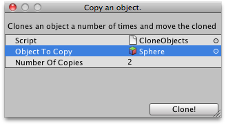

ScriptableWizard.OnWizardUpdate()
Description 描述
This is called when the wizard is opened or whenever the user changes something in the wizard.
This allows you to set the helpString, errorString and enable/disable the Create button via isValid.
Also it lets you change labels (for timers i.e.) or buttons when the wizard is being shown
See Also: ScriptableWizard.DisplayWizard

ScriptableWizard window for cloning a Game Object.
// Simple Wizard that clones an object several times.
using UnityEngine; using UnityEditor; using System.Collections;
public class CloneObjects : ScriptableWizard { public GameObject objectToCopy = null; public int numberOfCopies = 2; [MenuItem("Example/Clone objects")] static void CreateWindow() { // Creates the wizard for display ScriptableWizard.DisplayWizard("Clone an object.", typeof(CloneObjects), "Clone!"); }
void OnWizardUpdate() { helpString = "Clones an object a number of times and move the cloned objects to the origin"; if (!objectToCopy) { errorString = "Please assign an object"; isValid = false; } else { errorString = ""; isValid = true; } }
void OnWizardCreate() { for (int i = 0; i < numberOfCopies; i++) Instantiate(objectToCopy, Vector3.zero, Quaternion.identity); } }